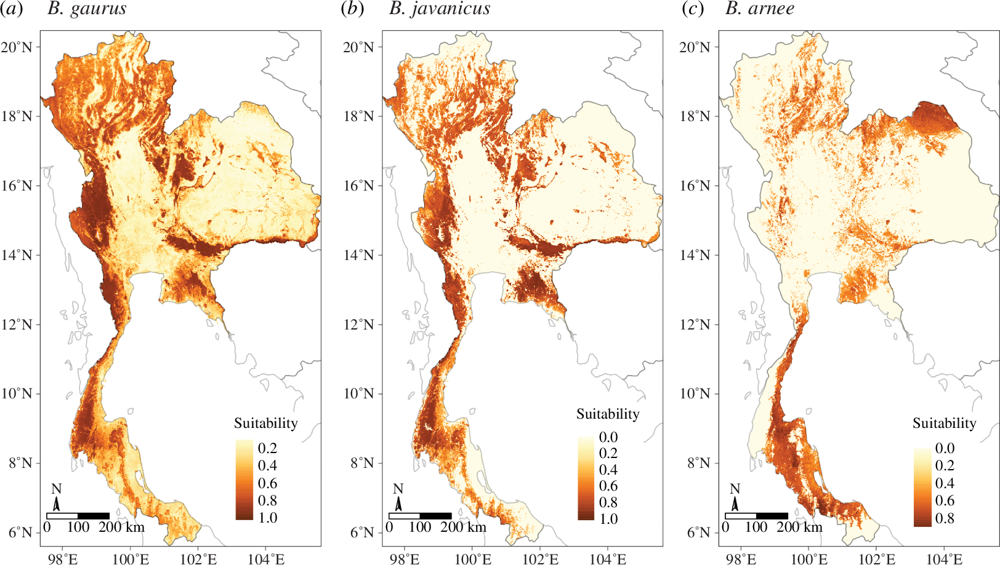
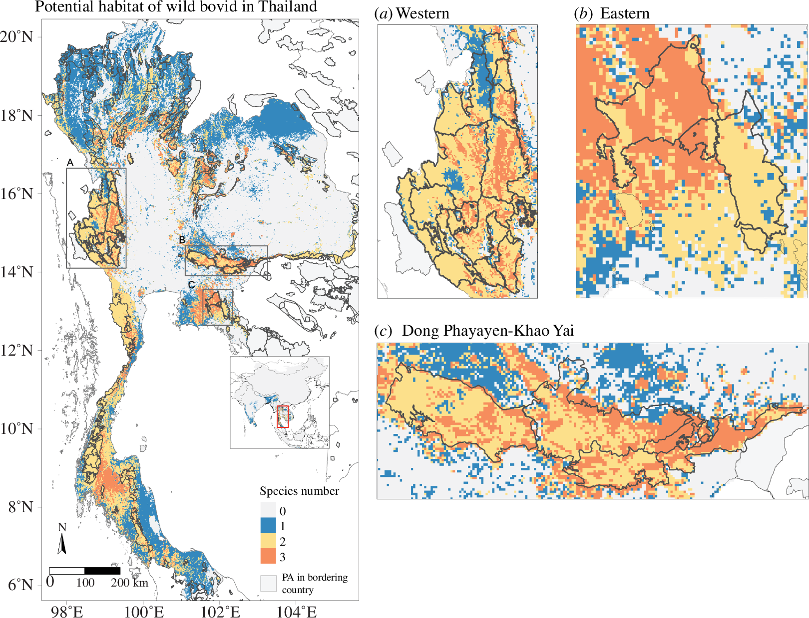
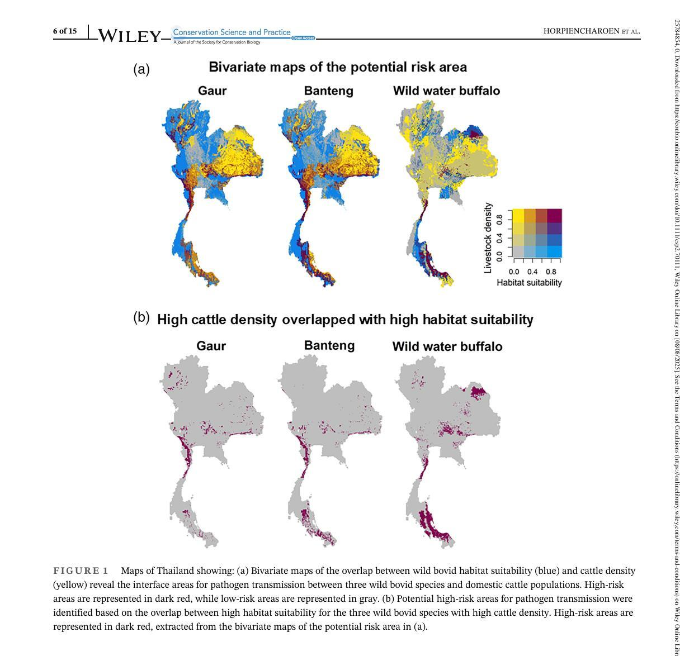
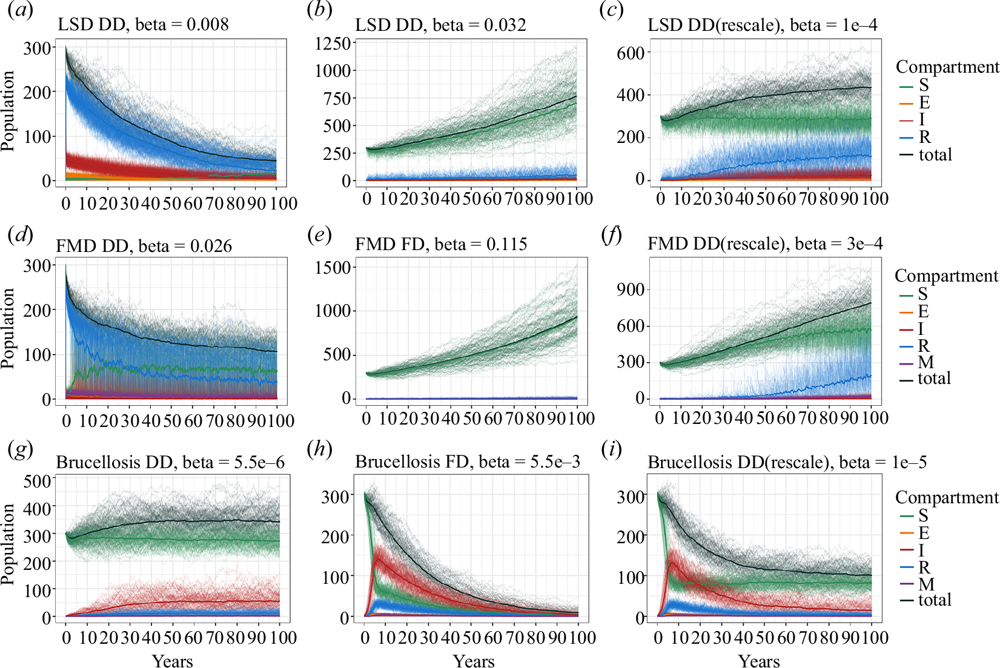
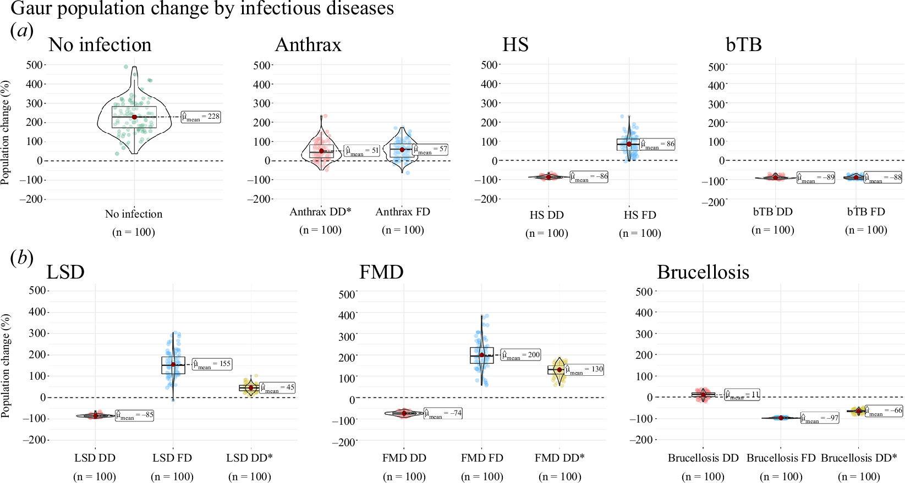

Research
My research explores how pathogens move among wildlife, livestock, and people — and how that knowledge can guide conservation and public health decisions. I work at three overlapping scales: the pathogen, the host community, and the landscape.
Below are the main stories that tie my work together. Each section links to the paper. Figures from my Royal Society and Wiley papers are reproduced under their original CC-BY licences; the mastitis diagram is an original schematic I drew to summarise the 2019 Preventive Veterinary Medicine paper.
SARS-CoV-2 in white-tailed deer — current postdoctoral work
At Penn State I’m analysing GPS movement data and contact networks from white-tailed deer (Odocoileus virginianus) across Pennsylvania and eight other U.S. states, in collaboration with USDA and USGS. The question: can deer act as a reservoir for SARS-CoV-2, and if so, what does that mean for spillback into people?
I combine step-selection and home-range analysis (using the amt package in R), contact-network construction, stochastic compartmental models, and Bayesian inference of transmission parameters. A first paper on the Pennsylvania contact network is in preparation.
Wild bovids, habitat, and infectious disease in Southeast Asia — my PhD
My doctoral work at Massey University asked a simple question with surprisingly complex answers: where do Thailand’s threatened wild bovids still have suitable habitat, and where does that habitat overlap with domestic cattle — creating places of shared pathogens?
Five bovid species still roam Thailand: gaur (Bos gaurus), banteng (Bos javanicus), wild water buffalo (Bubalus arnee), mainland serow (Capricornis sumatraensis) and Chinese goral (Naemorhedus griseus). Their populations have declined sharply under habitat fragmentation, hunting, and contact with domestic livestock that share their grazing grounds and pathogens.
Mapping the habitat that remains
In Horpiencharoen et al. (Royal Society Open Science, 2024), I built ecological niche models for all five species across 13 Asian countries and showed that over half of the suitable habitat for these wild bovids lies outside protected areas — meaning that conservation has to happen on the working landscape, not just inside reserves.

Layering species together — where the landscape holds many at once
Suitability for one species is useful. Suitability for several species stacked together is what matters for designing conservation corridors. Summing the per-species maps gives a habitat-richness surface that flags the places where the most wild bovids could coexist — and where protection and monitoring give the biggest return.

Where wildlife and livestock collide: mapping pathogen-transmission risk
In Horpiencharoen et al. (Conservation Science and Practice, 2025), I overlaid those habitat-suitability maps with cattle density to find the interface zones — landscapes where wild bovids and domestic cattle are most likely to share pathogens.
The interface is dominated by forest edges, cropland, and unclassified forest, and — strikingly — Kuiburi National Park alone holds 274 km² of high-risk area for gaur and banteng. For wild water buffalo the largest risk zone (126 km²) overlaps with Huai Thabthan–Had Samran. These maps give conservation managers and veterinary services specific, mappable places to focus surveillance and mitigation.

What happens if disease actually crosses the fence?
A map tells you where pathogens could spill, but not what that would do to the population. In Horpiencharoen et al. (Journal of the Royal Society Interface, 2024), I built stochastic compartmental models of a gaur population under six cattle-borne diseases: anthrax, bovine tuberculosis, haemorrhagic septicaemia, lumpy skin disease, foot-and-mouth disease, and brucellosis.
The key findings:
- Chronic infections (brucellosis, bTB) cause the greatest long-term damage. Frequency-dependent brucellosis drove gaur populations down by ~97 %, with extinction in 16 % of simulations.
- Acute, high-fatality diseases (anthrax) had surprisingly small effects — infected animals die quickly and “burn out” the outbreak.
- Disease-free populations grew by an average of 228 % over 100 years — so healthy gaur can recover, if given the chance.

The total-population view at the end of 100 years makes the ordering of threats unmistakeable: the chronic, density-dependent infections (brucellosis, bovine tuberculosis) hollow the population out over decades, while the acute high-fatality infections burn through quickly and rebound. Disease-free populations grow steadily — a reminder that healthy gaur recover when given the chance.

Dairy cows & mastitis — finding the risk factors that matter
Before wild bovids, my MSc and early veterinary work focused on a very different interface: small-holder dairy farms in western Thailand. Clinical mastitis is a costly, chronic problem for these farmers, and ordinary regression often hides the relationships between farm practices, pathogens, and treatment outcomes.
In Horpiencharoen et al. (Preventive Veterinary Medicine, 2019), my co-authors and I sampled 100 quarters of milk from 100 cows across 43 dairies and built a Bayesian network that connects farm management (floor type, dry-cow therapy, milking-machine hygiene, parity) to the pathogens isolated in mastitis milk (Streptococcus, Staphylococcus, E. coli, S. dysgalactiae) and to antimicrobial susceptibility (penicillin, gentamicin, cloxacillin, AMC).
The network made two things visible that ordinary statistics missed:
- Concrete or rubber floors, hand stripping after machine milking, dry-cow therapy, and routine milking-machine cleaning were the four strongest levers for reducing Streptococcus spp. — the dominant pathogen.
- Most isolates were resistant to penicillin G (40 %), but susceptible to amoxicillin/clavulanic acid (81 %) and cloxacillin (64 %) — useful, concrete guidance for farmers’ first-line treatment.
Spatial & computational epidemiology
I use spatial methods and reproducible workflows to bring ecology into epidemiology (and vice-versa):
- Species distribution and habitat-suitability modelling.
- Spatial and spatiotemporal risk mapping for zoonotic disease.
- Stochastic compartmental models for wildlife populations.
- Open code and version control (R + GitHub) for every analysis.
See the publications page for the full list.